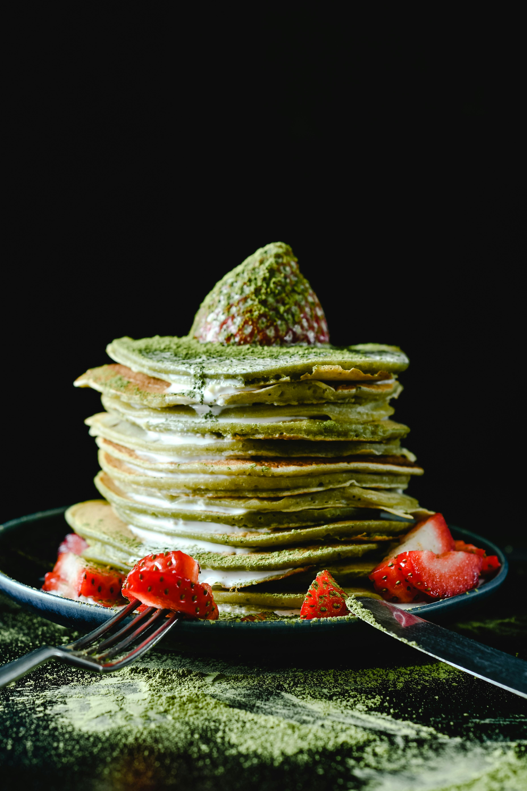

Back

Matcha Pancakes
Description
Green Tea Flavored Pancake based on the popular Japanese ceremonial tea.
Ingredients:
- 1 cup all-purpose flour
- 1 tablespoon green tea powder (matcha)
- 2 teaspoons baking powder
- 1/4 teaspoon salt
- 1 cup cashew milk
- 1 tablespoon cashew milk
- 1 large egg
- 2 tablespoons olive oil
- 2 teaspoons vanilla extract
- 1/2 cup white chocolate chips
Steps:
- Gather all ingredients.
- Whisk together flour, matcha, baking powder, and salt in a large bowl. Make a well in the center of mixture; add 1 cup plus 1 tablespoon cashew milk, egg, olive oil, and vanilla to the well. Whisk batter briefly until just a few small clumps of flour remain. Add chocolate chips; stir again briefly.
- Grease a small saucepan lightly; heat over medium-low heat. Transfer 2 to 3 spoonfuls batter onto the center of the pan, spreading batter with the back of the spoon. Cook until small bubbles rise to the surface and burst, about 1 minute. Flip and cook until the edges are lightly golden brown, about 1 minute more. Repeat with remaining batter.